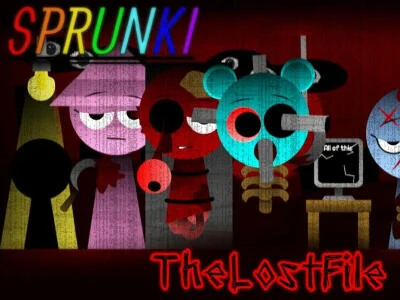

Sprunki: The Lost File
Uncover the Hidden Melodies!
About The Game
Sprunki: The Lost File takes you on an enigmatic journey through a mysterious musical archive. Discover fragments of lost beats, piece together forgotten melodies, and uncover the secrets hidden within the corrupted sound files. Use your musical intuition and problem-solving skills to restore the lost soundscape!
Sound Investigation
Track down lost beats
Beat Recovery
Restore corrupted files
Musical Mapping
Navigate sound archives
File Analysis
Decode hidden patterns
Lost Elements:
Lost Beats
Discover missing rhythms
Hidden Patterns
Decode sound sequences
Corrupted Data
Repair broken files
Secret Keys
Unlock hidden tracks
Key Features:
- Mysterious sound archive
- File recovery system
- Pattern recognition puzzles
- Musical investigation tools
- Hidden sound fragments
- Archive mapping system
- Data restoration mechanics
- Secret sound collections
Investigation Modes
Discovery
Find lost files
Recovery
Restore data
Analysis
Solve mysteries
Archive
Collect findings
Investigation Tools
Sound Scanner
Analyze patterns
File Fixer
Repair corruption
Archive Map
Track progress
Data Bank
Store findings
More Hot Games You Might Like
Frequently Asked Questions
How do I start investigating the lost files?
▼
Begin by exploring the archive map and using the Sound Scanner to detect corrupted files. As you discover fragments, use the File Fixer to restore them and piece together the complete musical picture.
Can I save my investigation progress?
▼
Yes! Your progress is automatically saved in the Data Bank. You can return to your investigation at any time and continue from where you left off.
What happens when I recover all files?
▼
Recovering all files unlocks the complete musical composition and reveals the mystery behind the lost soundscape. You'll also gain access to special bonus content and hidden tracks.
Are there different difficulty levels?
▼
Yes, the game features multiple difficulty levels that affect the complexity of file corruption and puzzle difficulty. Choose the level that best matches your investigation skills!